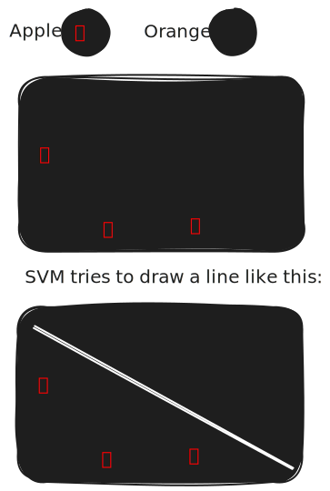
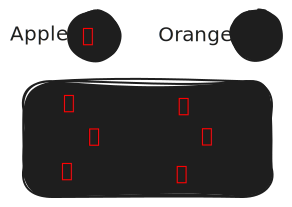

Validation Techniques & Supervised Learning Algorithms
|
├── 1. Validation Techniques
│ ├── Hold-Out Method
│ ├── K-Fold Cross Validation
│ ├── Leave-One-Out Validation
│ └── Bootstrapping
│
└── 2. Supervised Learning Algorithms
├── Linear Regression
├── Logistic Regression
├── Decision Trees
├── Support Vector Machine (SVM)
├── K-Nearest Neighbours (KNN)
├── CN2 Algorithm
├── Naive Bayes
└── Artificial Neural Networks (ANN)
- When you're building machine learning models, it's not just about choosing the right algorithm — it's
also about making sure your model actually works well on unseen data. That's why in this unit, we cover
two essential parts of any ML project: Validation Techniques and Supervised Learning Algorithms.
- We begin with validation techniques, which help us evaluate our models properly. You'll learn about
simple methods like the hold-out method, where data is split into training and testing sets, and more
advanced ones like K-Fold Cross Validation, Leave-One-Out, and Bootstrapping — all of which help ensure
your results are trustworthy and not just lucky guesses.
- Then, we move into the world of supervised learning algorithms, where the model learns from labeled
data. We’ll explore popular techniques like Linear Regression and Logistic Regression for prediction
tasks, Decision Trees for making rule-based decisions, and Support Vector Machines (SVM) for handling
complex boundaries between classes. You’ll also get to know K-Nearest Neighbours (KNN) for simple yet
effective classification, Naive Bayes for probabilistic prediction, the CN2 Algorithm for rule learning,
and Artificial Neural Networks (ANNs) — the building blocks of deep learning.
What Are Validation Techniques, Anyway?
- Imagine you’re learning to bake a cake. You practice by baking it 10 times using your recipe notes.
After a while, you get really good at making that same cake. But then your friend gives you a new
recipe to try—and suddenly, your cake flops. Why? Because you were only practicing with one version,
and now you’ve encountered something different.
- That’s exactly what happens in machine learning models. They might perform great on the data they’ve
seen (called training data), but when faced with new data (called test data), they might mess up.
-
So, validation techniques help us measure how well a model will perform on new, unseen
data.
1. The Hold-Out Method — Your First Validation Tool
- Let’s start with the most basic method: the Hold-Out Method.
- This technique is super simple and widely used, especially when you’re just getting started.
What is it?
- In the Hold-Out Method, we split our dataset into two parts:
- One part is for training the model.
- The other part is for testing the model.
- This helps us evaluate how well the model learned and how well it might do on future, unseen
data.
How Do You Split the Data?
- There’s no strict rule, but a common ratio is:
| Set Type |
Percentage of Data |
| Training Set |
70% – 80% |
| Testing Set |
20% – 30% |
- For example, if you have 1,000 data points:
- 800 go into training
- 200 go into testing
- This is sometimes called a 70-30 split or 80-20 split.
Advantages of the Hold-Out Method
| Advantage |
Explanation |
| Simple & Quick |
Very easy to implement and understand |
| Fast |
Great for large datasets because it’s not computationally heavy |
| Widely Used |
Useful in early model development and when time is limited |
Disadvantages of the Hold-Out Method
| Disadvantage |
Explanation |
| High Variance |
Results depend heavily on how the data is split — if the test set is too easy or too
hard,
it skews performance |
| Wasted Data |
We don’t use the test data during training at all, even though it might be helpful |
| Overfitting Risk |
If the training data isn’t representative, the model may learn poorly |
When Should You Use the Hold-Out Method?
- Use it when:
- You have a lot of data and a quick test is okay.
- You’re in the early stage of model experimentation.
- You need to benchmark models before doing more advanced validation like cross-validation.
Sample Use Case
- Let’s say you’re building a model to predict whether emails are spam or not. You have 10,000
emails:
- 8,000 go to the training set to teach the model what spam looks like.
- 2,000 go to the testing set to evaluate how well the model works on emails it hasn’t seen
before.
- If the model gets 95% accuracy on the training set but only 70% on the test set, that's a red
flag —the model has likely overfitted, meaning it memorized the training data but didn’t learn
how to generalize.
2. K-Fold Cross Validation
- K-Fold Cross Validation is a way to test a machine learning model more accurately by dividing the dataset into K equal parts (called “folds”).
The model is trained and tested K times, each time using a different fold for testing and the rest for training.
- Imagine you're studying for an exam using 100 questions. With the Hold-Out Method, you practice
with 80 and test yourself on 20. But what if those 20 were unusually easy or hard? Your test
score might not reflect your actual ability.
- K-Fold Cross Validation solves that problem by making sure every part of your data gets a turn
being tested.
Here’s the core idea:
- You divide your dataset into K equal parts, called folds.
- Then you run K rounds of training and testing:
- In each round, you use K−1 folds for training and 1 fold for testing.
- Each fold gets used once as the test set.
- After all K rounds, you average the results to get a better estimate of your model’s true
performance.
Let’s See an Example: 5-Fold Cross Validation
- Say you have 100 data points, and you choose K = 5.
| Fold |
Training Data |
Testing Data |
| 1 |
Folds 2, 3, 4, 5 |
Fold 1 |
| 2 |
Folds 1, 3, 4, 5 |
Fold 2 |
| 3 |
Folds 1, 2, 4, 5 |
Fold 3 |
| 4 |
Folds 1, 2, 3, 5 |
Fold 4 |
| 5 |
Folds 1, 2, 3, 4 |
Fold 5 |
- After all 5 rounds, you average the test results to get one final performance score.
Real-Life Analogy
- Think of it like a group of friends reviewing your speech. You have 5 friends (folds). Instead
of showing your speech to just one friend (like in Hold-Out), you:
- Show it to 4 of them for feedback and practice (training),
- Then present it to the 5th to see how you perform under pressure (testing),
- Repeat this so every friend gets a turn as the audience.
- At the end, you average everyone’s feedback to know how good your speech really is.
Why Use K-Fold Instead of Hold-Out?
| Feature |
Hold-Out Method |
K-Fold Cross Validation |
| Simplicity |
Very simple |
A bit more complex |
| Accuracy |
Can vary a lot |
More reliable estimate |
| Use of data |
Uses part of the data |
Uses all data for testing (eventually) |
| Risk of bias |
High (depends on split) |
Low (every point is tested) |
- So in a nutshell: Hold-Out is quick, but K-Fold is smart.
How to Choose K?
| K Value |
When to Use |
Pros |
Cons |
| 5 |
Common in practice |
Less computation time |
Slightly less precise |
| 10 |
Very popular |
Balanced accuracy and effort |
More computation |
| N (data size) |
Called Leave-One-Out |
Most precise |
Very slow on large datasets |
- For most problems, K = 5 or K = 10 is the sweet spot.
Limitations of K-Fold Cross Validation
- While it's a great method, it’s not perfect:
- Computational Cost: It takes K times longer than Hold-Out because you train
K models.
- Still Random: If the folds aren't stratified (i.e., balanced in class
distribution), results may be misleading.
- Data Leakage Risk: If you accidentally let test data influence training,
you can ruin the whole point of validation. Be careful with preprocessing!
Wrapping It All Up
- So to sum up, K-Fold Cross Validation is like testing your model from every angle. It:
- Reduces bias and variance,
- Uses the entire dataset effectively,
- Gives a more trustworthy picture of your model’s performance.
- It’s a big step up from the Hold-Out Method and is widely used in real-world machine learning
projects and competitions.
3. Leave-One-Out Validation
- Imagine you're trying to learn a new skill—say cooking. You’ve got a collection of 10 recipes
(your dataset). You want to test how good your overall cooking is.
- Now, instead of leaving out a big chunk of your recipes to test like in the Hold-Out Method, or
even splitting it into 5 parts like in 5-Fold Cross Validation, you leave out just one recipe at
a time to test yourself.
- That’s Leave-One-Out Validation in a nutshell.
Definition:
- Leave-One-Out Validation means:
- For a dataset with n examples, you:
- Use n-1 examples to train the model.
- Use the 1 remaining example to test.
- Repeat this n times, each time leaving out a different example.
- Finally, you average the performance across all n tests.
- It’s like giving every single data point its own personal spotlight.
Let’s Take a Mini Example
- Say you have a small dataset:
- You’ll do 4 rounds (since n = 4):
| Round |
Training Set |
Test Set |
| 1 |
B, C, D |
A |
| 2 |
A, C, D |
B |
| 3 |
A, B, D |
C |
| 4 |
A, B, C |
D |
- In each round, you train the model using 3 data points and test it on the 1 point you left out.
After 4 rounds, you combine the results for your final evaluation.
Why Use Leave-One-Out?
- Here’s a little comparison:
| Method |
What It Does |
When to Use |
| Hold-Out |
One-time split |
Quick but may be biased |
| K-Fold |
Split into K parts |
More balanced, less biased |
| Leave-One-Out |
Train n times, each time with n-1 |
Most thorough, least biased |
- Pros:
- You get the maximum use of your data for training in each round.
- Since every data point is tested, no example is ignored.
- Great when you have a small dataset, and every data point is valuable.
- Cons:
- Computationally expensive: If you have 1000 data points, you train the model 1000 times!
- Not practical for very large datasets.
- Can be sensitive to noisy data (i.e., if one weird point is tested alone, it might give an
unreliable result).
Real-Life Analogy
- Imagine a teacher who wants to evaluate each student’s understanding without using the same test
for all. So they:
- Teach the whole class except for one student,
- Ask that one student to answer questions,
- Repeat this until every student has had their own solo test.
- At the end, the teacher gets a fair sense of how well each student might perform individually.
- That’s exactly what Leave-One-Out does — it treats each example as equally important for
testing.
When Should You Use LOO?
| Situation |
Should You Use LOO? |
| You have very little data |
Yes |
| You want a low-bias evaluation |
Yes |
| You have limited time/resources |
No |
| You’re working with big data |
No |
- So LOO is a great option when accuracy matters more than speed, especially in small research
datasets or medical studies where data is scarce.
Wrapping It Up
- So far in validation techniques, here’s how things stack up:
| Method |
Speed |
Accuracy |
Data Usage |
Best For |
| Hold-Out |
Fast |
Low |
Partial |
Quick & dirty checks |
| K-Fold |
Medium |
Medium–High |
All (rotated) |
General-purpose ML |
| Leave-One-Out |
Slow |
Very High |
All (1 test at a time) |
Small, precious datasets |
- In the end, Leave-One-Out Validation gives you a super-detailed view of your model’s
performance, at the cost of time and processing power.
4. Bootstrapping
- Bootstrapping is a resampling technique. That means instead of splitting the dataset in one
fixed way (like Hold-Out or K-Fold), we create many new datasets by randomly picking examples
from the original dataset — and here’s the twist — with replacement.
"With Replacement" Means:
- You can pick the same data point more than once in a single sample.
- Imagine you have a bag with 5 different colored balls (your dataset), and you draw one, write
down the color, and then put it back in the bag before drawing again. That’s sampling with
replacement.
Example Time!
- Suppose we have a small dataset of 5 items:
- Now we want to create a bootstrapped sample of 5 items (same size as original). A possible
random sample with replacement could be:
-
Sample 1 = [B, C, C, E, A]
- Notice:
- It still has 5 items (same as original).
- Item 'C' appears twice.
- Item 'D' is missing (this can happen!).
- We can create many such samples — say 1000 — and for each one, train our model and test it on
the data points not included in that sample. The idea is to get a better estimate of how the
model might perform in general.
Why Do We Use Bootstrapping?
- Sometimes, especially when data is limited, we can’t afford to hold out a lot of it for testing.
Bootstrapping lets us:
- Make the most out of small datasets.
- Estimate the accuracy or error of a model reliably.
- Reduce bias in model evaluation.
- Generate multiple models (like in bagging or Random Forests).
- It’s a very flexible approach and doesn’t assume any specific structure about your data.
How Bootstrapping Works (Step-by-Step)
| Step |
What Happens |
| 1 |
From your dataset of size n, sample n instances with replacement. |
| 2 |
Train your model on this sample. |
| 3 |
Test the model on the data points that weren’t selected (called "out-of-bag"). |
| 4 |
Repeat this process many times (e.g., 1000 rounds). |
| 5 |
Average the results for a final performance estimate. |
Let’s Compare With Other Methods
| Method |
Uses All Data? |
Repeated Rounds |
Biased? |
Fast? |
Ideal For |
| Hold-Out |
No |
No |
Yes |
Fast |
Large datasets |
| K-Fold |
Yes (rotates) |
Yes |
Less |
Moderate |
Most cases |
| Leave-One-Out |
Yes |
Yes (many) |
No |
Slow |
Small, precious datasets |
| Bootstrapping |
Yes (reused) |
Yes (many) |
No |
Depends |
Estimating model accuracy |
Real-Life Analogy
- Think of bootstrapping like this:
- You’re trying to figure out how good your friend is at solving puzzles. But you only have 10
puzzles. Instead of giving all at once or splitting them, you keep reshuffling those 10
puzzles, giving a different combination each time — some repeated, some skipped. Over time,
you get a solid idea of their average performance across all types of challenges.
Where Bootstrapping Shines
- In ensemble learning: Bootstrapping is the secret sauce behind algorithms like Bagging and
Random Forests.
- In confidence interval estimation: You can estimate uncertainty of predictions.
- In real-world cases where getting new data is hard, but you want to simulate more data
situations.
Final Thoughts
- Bootstrapping may seem like magic at first — reusing the same data to act like we have new data
— but it’s a statistically sound, clever trick. It’s a bit like trying out different
combinations of ingredients from your kitchen to see how many tasty dishes you can make without
going shopping again!
- So with bootstrapping, even a small dataset can go a long way.
Supervised Learning Algorithms: An Overview
- Supervised learning is a type of machine learning where the model is trained on labeled data. In this approach, each training example includes an input and the correct output (label). The model learns patterns from this data to make accurate predictions on new, unseen inputs.
- There are many algorithms that come under supervised learning, each with its own style and strengths. Here’s a quick list
of the major ones you’ll come across:
- Linear Regression
- Logistic Regression
- Decision Trees
- Support Vector Machine (SVM)
- K-Nearest Neighbours (KNN)
- CN2 Algorithm
- Naive Bayes
- Artificial Neural Networks (ANN)
- Each of these tackles different problems and data types, but today, let’s start simple and build a
strong foundation by understanding the very first one: Linear Regression.
What is Linear Regression?
- At its core, Linear Regression is a way to predict a number — a continuous value — based on some
input data.
- Imagine you want to predict the price of a house based on its size. You might have data on
several houses: their sizes and prices. Linear regression helps you draw a straight line that
best fits this data, so when you get a new house size, you can guess the price!
Breaking It Down:
- Input (Feature): The thing you know (e.g., house size in square feet).
- Output (Target): The thing you want to predict (e.g., house price in dollars).
- Model: A straight line that connects input to output.
- Mathematically, it looks like:
y=mx+c
y=mx+c
- Where:
- y = predicted output (house price)
- x = input feature (house size)
- m = slope (how price changes with size)
- c = intercept (price when size is zero)
Real-Life Example: Predicting House Prices
- Suppose we have this tiny dataset:
| House Size (sq ft) |
Price (in $1000s) |
| 800 |
150 |
| 1000 |
180 |
| 1200 |
210 |
| 1500 |
260 |
- Plotting these points, you’d see they roughly line up in a straight line going up — bigger
house, higher price.
- Linear regression tries to find the best line through these points.
How Does Linear Regression Find This Line?
- It uses a method called Least Squares — the goal is to minimize the total “distance” (error)
between the actual prices and the prices predicted by the line.
- Imagine throwing darts at a line: you want the line positioned so that the darts land as close
as possible to it.
Visual Understanding
| Data Point |
Actual Price |
Predicted Price |
Error (Distance) |
| House 1 |
150 |
155 |
5 |
| House 2 |
180 |
185 |
5 |
| House 3 |
210 |
215 |
5 |
| House 4 |
260 |
255 |
5 |
- Least squares tries to make these errors as small as possible.
Why Use Linear Regression?
- Simple and fast to understand and train.
- Works well when the relationship between input and output is roughly linear.
- Provides a clear mathematical formula you can interpret.
- Good starting point before trying complex models.
Quick Summary Table
| Aspect |
Description |
| Goal |
Predict continuous output |
| Model Type |
Linear (straight line) |
| Input |
Numeric features |
| Output |
Continuous numerical value |
| Training Method |
Least Squares (minimize error) |
| Real-life Example |
Predicting house prices, stock prices, salary |
Wrapping It Up
- Linear Regression is like drawing the best straight line through your data points to make
predictions. It’s simple, intuitive, and a great starting point for learning machine learning.
- Next up, you might want to explore Logistic Regression — which, despite the name, is used for
classification (predicting categories). Let me know if you want to jump there!
Logistic Regression: What’s It All About?
- If you remember, Linear Regression was about predicting continuous numbers — like the price of a
house or a person’s salary. But what if you want to solve a different kind of problem — one
where you want to classify things? For example:
- Will an email be spam or not spam?
- Is a patient’s test result positive or negative?
- Will a customer buy a product or not buy?
- For problems like these, where the answer is a category or class instead of a number, we use
classification algorithms. And one of the simplest and most widely used is Logistic Regression.
How Does Logistic Regression Work?
- Unlike linear regression, logistic regression predicts a probability — a number between 0 and 1
— that represents how likely something belongs to a particular class. For example, “There’s an
80% chance this email is spam.”
The Core Idea: The Logistic Function (Sigmoid)
- Logistic regression uses a special curve called the sigmoid function to squeeze any number into
a value between 0 and 1.
- The formula looks like this:
\( \sigma(z) = \frac{1}{1 + e^{-z}} \)
- Where:
- z is a linear combination of input features (like \( z = mx + c \) in
linear regression)
- e is Euler’s number (about 2.718)
- The sigmoid curve is “S” shaped — it takes any real number and converts it into a probability.
Simple Real-Life Example: Predicting if Someone Will Play Basketball
- Imagine you want to predict if someone will play basketball today based on the temperature.
Here’s some data:
| Temperature (°F) |
Played Basketball? (Yes=1, No=0) |
| 55 |
0 |
| 65 |
0 |
| 75 |
1 |
| 85 |
1 |
- Logistic regression will fit a curve that outputs the probability of playing basketball at each
temperature.
- At 55°F, the model might say: 20% chance → probably no.
- At 85°F, it might say: 90% chance → probably yes.
Decision Boundary
- When we use logistic regression, we usually set a cutoff (called a threshold) to decide the
class.
| Probability Predicted |
Final Decision |
| ≥ 0.5 |
Yes (Class 1) |
| < 0.5 |
No (Class 0) |
- This means if the model predicts a 0.7 probability, we say “Yes,” but if it predicts 0.3, we say
“No.”
How Is Logistic Regression Different From Linear Regression?
| Aspect |
Linear Regression |
Logistic Regression |
| Predicts |
Continuous numeric values |
Probabilities (between 0 and 1) |
| Output type |
Any real number |
Values squeezed into (0,1) by sigmoid |
| Use case |
Regression problems |
Binary classification problems |
| Model output |
Straight line |
S-shaped sigmoid curve |
Why Is Logistic Regression So Popular?
- It’s easy to understand and implement.
- It outputs probabilities, which gives us more insight than just “yes/no.”
- Works well when the relationship between features and the log-odds of the outcome is linear.
- It’s a great starting point for binary classification problems.
To Wrap Up
- Logistic Regression is your go-to algorithm when you want to classify data into two classes and
get a probability that tells you how confident the model is. It uses the clever sigmoid function
to map any input into a probability between 0 and 1, and based on a cutoff, it decides the
class.
- Next, you might want to explore Decision Trees, which are more like asking a series of “yes/no”
questions to classify data. Let me know if you want me to explain that too!
Decision Trees
- Imagine you want to decide what to eat for dinner. Instead of flipping a coin, you ask yourself
some simple questions like:
- Do I want something healthy?
- Do I want something quick to make?
- Am I in the mood for something spicy?
- This kind of step-by-step questioning is exactly what Decision Trees do—but for data!
What is a Decision Tree?
- A Decision Tree is a popular machine learning algorithm that helps you make decisions based on a
series of questions (called splits) about the data. It looks like a flowchart or a tree,
starting from a single question at the root and branching out into other questions or final
answers at the leaves.
- Each internal node represents a test on an attribute (like “Is temperature > 70°F?”), and
each branch represents the outcome of that test (Yes/No). The leaves represent the final
decision or class (like “Play basketball” or “Don’t play”).
Why Use Decision Trees?
- Easy to understand and interpret (you can even draw it!)
- Handles both categorical and numerical data
- No need to normalize or scale data
- Works well for classification and regression tasks
Real-Life Example: Should You Play Basketball?
- Let’s say you want to decide if you should play basketball today. You have these features:
- Temperature
- Is it raining?
- Is it a weekday?
- Here’s a simple decision tree for this:
How Does a Decision Tree Learn?
- The tree learns by splitting the data based on features that best separate the classes. The goal
is to make groups that are as pure as possible — meaning most of the examples in a group belong
to one class.
Measuring the Quality of Splits: Entropy and Information Gain
- To decide the best question to ask at each step, the tree uses concepts like:
| Term |
What it Means |
| Entropy |
A measure of uncertainty or disorder in the data. Lower entropy means purer groups. |
| Information Gain |
How much uncertainty is reduced by splitting on a feature. The best split maximizes this
gain. |
Quick Example of Entropy
- Suppose you have a group with:
| Class |
Number of Samples |
| Play |
8 |
| Don’t Play |
2 |
- This group is mostly “Play,” so entropy is low (less uncertain). If the group were half “Play”
and half “Don’t Play,” entropy would be higher (more uncertain).
Advantages and Limitations
| Advantages |
Limitations |
| Easy to interpret and visualize |
Can easily overfit (too complex) |
| Handles different data types |
Small changes in data can change tree drastically |
| Requires little data preprocessing |
Might be biased towards features with more levels |
To Summarize
- Decision Trees are like asking a series of simple questions to reach a conclusion.
- They split data step by step to create pure groups.
- They use measures like entropy and information gain to decide the best splits.
- Great for beginners because the output is easy to understand and explain.
Support Vector Machine (SVM): Finding the Best Boundary
- Imagine you have a basket full of apples and oranges scattered on a table, and you want to
separate them using a straight line so that all apples are on one side and all oranges on the
other. Sounds simple, right?
- This is exactly the kind of problem that Support Vector Machines (SVM) help solve — they find
the best possible boundary to separate different classes of data.
What is SVM?
- SVM is a powerful supervised learning algorithm used mostly for classification tasks (though it
can be used for regression too). It tries to find a line (in 2D), or a plane/hyperplane (in
higher dimensions), that separates different classes with the maximum margin — meaning the
boundary that is as far away as possible from the nearest data points of each class.
Key Concepts in SVM
| Concept |
Explanation |
| Hyperplane |
The decision boundary that separates classes. |
| Margin |
The gap or distance between the hyperplane and closest data points of each class. SVM
maximizes this margin. |
| Support Vectors |
The data points closest to the hyperplane — these “support” or define the boundary. |
Visualizing SVM in 2D
Imagine emgoies belonging to two classes, apple and orange:

But it picks the line that has the biggest “gap” or margin between the nearest apple and orange
.
Why Maximize the Margin?
A bigger margin means better generalization — the model will perform better on new data, not
just the training data. Think of it as drawing a fence between apples and oranges, and you want
the fence far enough from the nearest fruits so no one’s mistakenly included on the wrong side.
What if Data Isn’t Linearly Separable?
Sometimes, the apples and oranges are all mixed up, and no straight line can separate them
cleanly.
Example:

In such cases, SVM uses a trick called the Kernel Trick:
- It maps data into a higher-dimensional space where the classes become linearly separable.
- Think of it like lifting the fruits off the table into 3D, where a flat sheet (plane) can
separate them easily.
Common Kernels in SVM
| Kernel Type |
Use Case |
What It Does |
| Linear Kernel |
When data is linearly separable |
No mapping; just draws a straight line |
| Polynomial Kernel |
When data needs a curved boundary |
Maps data into polynomial higher dimension |
| Radial Basis Function (RBF) |
When data is very complex |
Maps data into infinite-dimensional space for maximum flexibility |
Real-Life Example
- Imagine you’re an email spam filter. Your algorithm needs to decide whether an email is spam or
not based on features like:
- Number of links
- Certain keywords
- Sender reputation
- SVM will try to find the best boundary that separates spam emails from non-spam emails by
considering these features, ensuring it’s robust even with tricky examples close to the decision
boundary.
Advantages and Disadvantages of SVM
| Advantages |
Disadvantages |
| Works well with high-dimensional data |
Can be slow on very large datasets |
| Effective when number of features > number of samples |
Choosing the right kernel can be tricky |
| Good at finding clear margins of separation |
Less interpretable compared to decision trees |
Quick Summary
- SVM tries to find the best boundary (hyperplane) to separate classes with the largest margin.
- Uses support vectors (closest points) to define this boundary.
- When data is messy, SVM uses the Kernel Trick to separate data in higher dimensions.
- Very useful in classification problems like spam detection, image recognition, and more.
K-Nearest Neighbours (KNN)
- Imagine you're in a new city and you're craving pizza. You open Google Maps, and it shows
several restaurants nearby. You spot a few labeled “Pizza,” and based on what’s closest to you,
you decide where to go.
- That’s kind of how KNN works! It looks at the nearest neighbors (data points) to decide which
class a new data point should belong to.
But What Is KNN Really?
- KNN is a supervised learning algorithm used for classification (and sometimes regression). The
idea is simple:
- To classify a new data point, KNN looks at the ‘K’ closest points in the training data and
assigns the class that is most common among them.
- Let’s break it down!
Step-by-Step: How KNN Works
- Choose K – the number of neighbors you want to look at (like 3, 5, etc.).
- Calculate the distance between the new point and all existing data points (usually using
Euclidean distance).
- Pick the K nearest neighbors – those closest to the new point.
- Vote – The majority class among these K neighbors wins.
- Assign the class to the new point.
Real-Life Analogy
- Suppose you move into a new apartment and want to guess whether it’s in a residential or
commercial zone. You look at your 3 nearest buildings:
| Neighbour |
Type |
| A |
Residential |
| B |
Commercial |
| C |
Residential |
- So, 2 out of 3 are residential → your guess? You're probably in a residential area!
Distance Matters
- The whole KNN idea revolves around distance:
- The most common metric? Euclidean Distance (straight-line distance).
- Here’s the Euclidean distance formula for 2 points:
Distance = \((x_2 − x_1)^2 + (y_2 − y_1)^2\)
Example: Classifying Fruits
- Let’s say we want to classify a new fruit based on weight and texture:
| Fruit |
Weight (grams) |
Texture (1 = smooth, 0 = bumpy) |
Class |
| A |
150 |
1 |
Apple |
| B |
170 |
0 |
Orange |
| C |
140 |
1 |
Apple |
- Now, we get a new fruit with weight = 160, texture = 1. We compute distances to all 3 and find
the 2 nearest neighbors (K=2). Suppose both are Apples → classify it as Apple.
Choosing the Right 'K'
- This is important!
- If K is too small (like 1), it might be sensitive to noise.
- If K is too large, it may include points from other classes and mess things up.
- A good practice is to try multiple K values using cross-validation.
Pros and Cons
| 👍 Pros |
👎 Cons |
| Simple to understand |
Slower with large datasets |
| No training step needed |
Requires good choice of K and distance |
| Adapts easily to new data |
Not great with high-dimensional data |
A Few Tips
- Scale your data (e.g., normalize features), or else distance calculations will be off.
- Works best when features are numeric and meaningful.
- It’s called a lazy learner because it doesn’t learn a model — it just stores data and waits
until a prediction is needed.
Wrapping Up
- KNN is like that friend who always asks the neighbors before making a decision. It's simple,
doesn’t require complex math to understand, and is surprisingly powerful for small datasets.
- Next time you look at a new item and want to decide what it might be — just imagine KNN looking
at its nearby buddies and voting based on majority.
CN2 Algorithm
- Alright! So far, you’ve seen things like Decision Trees, KNN, and SVM, right? All of these are
different approaches to solving classification problems — where we’re trying to put stuff into
the right category.
- Now enter: CN2 Algorithm — not as famous as others, but it's a rule-based learner. That means
instead of learning a big tree or finding a boundary (like in SVM), it learns IF-THEN rules.
- Think of it like this:
- IF a person is above 60 AND has shortness of breath → THEN
risk = high
- IF student has attendance > 90% AND assignment = submitted →
THEN result = pass
- That's the kind of stuff CN2 creates — clear, readable rules.
CN2 in Simple Words
- CN2 is used for classification problems.
- It creates a set of rules that help you decide what category a new data point belongs to.
- It tries to find general rules that are accurate and not too specific.
- The algorithm searches through possible combinations of conditions and picks the ones that
perform best.
Why “CN2”?
- The name CN2 comes from its predecessor, CN, and this was its improved version (hence CN “2”).
It was developed to handle noisy data better and avoid overly complex rules.
How Does CN2 Work?
- Let’s break the process down.
- Step 1: Start with all training data.
- Step 2: Generate possible rules.
- It looks for conditions that can split the data well, like:
- age > 30
- income = high
- gender = female
- Step 3: Evaluate each rule.
- It checks:
- How accurate is this rule?
- How many examples does it cover?
- Is it better than random guessing?
- Step 4: Pick the best rule and remove the covered examples.
- Step 5: Repeat until no more good rules are found.
A Mini Example
- Let’s say you're trying to predict whether someone buys a product based on age and salary.
| Age |
Salary |
Buys? |
| 22 |
Low |
No |
| 25 |
High |
Yes |
| 35 |
High |
Yes |
| 40 |
Low |
No |
| 30 |
High |
Yes |
- CN2 might generate rules like:
- IF salary = High → THEN Buys = Yes
- IF age < 30 AND salary=Low → THEN Buys = No
- See how it finds meaningful patterns?
How Is CN2 Different from Decision Trees?
| Decision Trees |
CN2 Algorithm |
| Builds a tree structure |
Builds IF-THEN rules |
| Each path = one rule |
Rules are independent |
| Easy to visualize |
Easy to read |
| Can be less flexible |
More flexible rule selection |
- While both aim to split data into classes, CN2 can express more flexible conditions because it’s
not locked into a tree structure.
Pros and Cons of CN2
| Pros |
Cons |
| Produces human-readable rules |
Can be slow for large datasets |
| Handles noisy data fairly well |
Might not scale well |
| Flexible, avoids overfitting |
Less popular, so fewer tools |
Where Is It Used?
- In medical diagnosis (like generating health rules)
- In credit scoring systems
- In decision support systems
- Basically, anywhere you want clear rules from data!
Summary
- So, CN2 is like a smart rule-writer. Instead of drawing boundaries or trees, it writes logic
like:
- IF conditions → THEN class
- This makes the model interpretable and practical, especially when you want to explain your
decisions clearly.
First Things First: What is Naive Bayes?
- Alright, so you've probably heard of probabilities in everyday life:
- Naive Bayes is a supervised learning algorithm that uses probability to predict categories or
classes. It’s based on Bayes’ Theorem — a mathematical rule for updating our guess about
something based on new evidence.
- The “Naive” part? It assumes that all the features (like age, income, color, etc.) are
independent of each other. That’s a pretty strong assumption — and usually not true — but
surprisingly, it works well in many real-world cases!
Real-Life Analogy: Spam Filter
- Imagine you work for an email company like Gmail. You want to build a system that can predict
whether an email is spam or not.
- You have past data showing which words (like “win”, “free”, “lottery”) appear frequently in spam
emails, and which words (like “project”, “meeting”) show up in normal ones.
- Using Naive Bayes, your system can look at the words in a new email and calculate the
probability of it being spam or not — and make a decision.
Bayes' Theorem
- Here’s the formula (don’t worry, we’ll explain it simply):
- What it means in plain English:
- The chance of A happening given B is based on:
- How likely B is if A is true,
- How common A is in general,
- And how common B is overall.
- For Naive Bayes:
- A = Class (e.g., Spam or Not Spam)
- B = Evidence/Features (e.g., Words in the email)
- We use this to compute which class (spam/not spam) is most probable for the given features.
Example: Classifying Fruits
- Imagine you're trying to guess the type of fruit based on color and size.
- You have this training data:
| Color |
Size |
Fruit |
| Red |
Small |
Cherry |
| Green |
Large |
Watermelon |
| Yellow |
Medium |
Banana |
| Red |
Large |
Apple |
- Now, a new fruit comes in that is Red and Large. What fruit is it?
- Using Naive Bayes:
- Check how often each fruit appears (prior probability).
- Check how often red or large appear with each fruit (likelihood).
- Calculate probabilities.
- Choose the fruit with the highest probability.
Step-by-Step: How Naive Bayes Works
- Let’s say you’re building a spam filter:
- Prepare the data
- Emails labeled as spam or not.
- Extract features (like word frequency).
- Calculate Prior Probabilities
- % of emails that are spam.
- % of emails that are not spam.
- Calculate Likelihoods
- How often each word appears in spam.
- How often it appears in non-spam.
- Apply Bayes’ Theorem
- Use the formula to find the probability of spam vs. not spam.
- Pick the class with the highest probability
Simple Table Example
| Word |
Spam Count |
Not Spam Count |
| Free |
20 |
2 |
| Offer |
18 |
3 |
| Meeting |
1 |
15 |
- If an email has the words: “Free Offer”, it’s more likely to be spam.
- If it says: “Meeting”, it’s likely not spam.
- Naive Bayes would calculate probabilities for both cases and choose the higher one.
Pros and Cons
| Pros |
Cons |
| Simple and fast |
Assumes independence between features |
| Works well with text data |
Doesn’t handle numeric data well (by default) |
| Good with high-dimensional data |
Struggles if features are dependent |
| Easy to implement |
Needs clean and preprocessed data |
Where Is It Used?
- Spam Filters
- Sentiment Analysis (positive/negative reviews)
- News Categorization (politics, sports, etc.)
- Medical Diagnosis
Artificial Neural Networks (ANN)
- Welcome to the world of Artificial Neural Networks, or ANN for short. If you've ever heard
people talk about "AI" or "machine learning" and wondered what’s going on behind the scenes,
neural networks are one of the main engines driving all that magic. Let's explore it step by
step in a simple, friendly way.
What Are Artificial Neural Networks?
- Think of your brain. It's made up of billions of neurons, right? Each neuron receives
information, processes it, and passes it on. Now, Artificial Neural Networks are inspired by
this biological structure. They try to mimic how a human brain works—at least in a very
simplified, mathematical way.
- In essence, ANN is a type of machine learning model that is especially powerful for tasks like
image recognition, speech processing, and even playing games.
Basic Structure of ANN
- An Artificial Neural Network has three main types of layers:
| Layer Name |
What It Does |
| Input Layer |
Takes the raw data (e.g., pixels from an image) |
| Hidden Layer(s) |
Processes the data through connected nodes (neurons) |
| Output Layer |
Produces the result (e.g., is this a cat or a dog?) |
- Each of these layers contains neurons, and each connection between neurons has a weight, which
decides how strong that connection is.
- Imagine the layers like this:
Input Layer Hidden Layers (1 or more) Output Layer
[Feature 1] ---> [Neuron] --> [Neuron] ---> [Result]
[Feature 2] ---> [Neuron] --> [Neuron] ---> [Result]
...
A Real-Life Example: Predicting If an Email Is Spam
- Let’s say you're building a system to check if an email is spam or not spam.
- Input Layer: Words from the email like “free,” “win,” “offer,” etc. are turned into numbers.
- Hidden Layer: These numbers are passed through neurons that try to identify patterns (maybe
spam emails have lots of “win a prize” kind of phrases).
- Output Layer: Returns something like [1, 0] for Spam and [0, 1] for Not Spam.
How Does ANN Learn?
- This part is fascinating! ANNs learn using a process called backpropagation. Let’s break that
down:
- Forward Propagation: Data flows from input to output.
- Error Calculation: The network checks how far its prediction is from the actual result.
- Backpropagation: It goes back and adjusts the weights to reduce the error.
- Repeat: It does this many times, slowly improving its predictions.
- Over time, the network “learns” which patterns lead to correct outputs.
Activation Functions
- Neurons in the network decide what to pass forward using something called an activation
function. These help the network introduce non-linearity, which means it can understand complex
patterns.
- Here are a few common ones:
| Activation Function |
Purpose |
| Sigmoid |
Squashes values between 0 and 1 |
| ReLU (Rectified Linear Unit) |
Converts negatives to 0 and keeps positives |
| Tanh |
Squashes between -1 and 1 |
- These help decide whether a neuron should “fire” or not.
Why Use ANN?
- Because it's super flexible and can handle complex patterns that other models struggle with.
- Applications:
- Image recognition (e.g., Google Photos)
- Speech-to-text (e.g., Siri)
- Self-driving cars
- Predicting diseases from X-rays
- Even generating music or art!
Pros and Cons of ANN
| Pros |
Cons |
| Learns complex patterns |
Needs a lot of data |
| Can adapt over time |
Training takes time and resources |
| Useful for unstructured data |
Often hard to interpret ("black box") |
Summary
- Artificial Neural Networks are like mini-brains for computers. They are made of layers of
neurons that pass data, make predictions, and improve themselves through learning. While they
need a lot of data and power, they can be incredibly accurate for the right tasks.